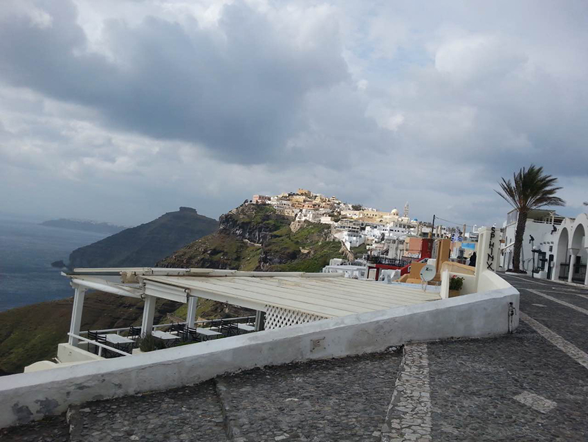

那時候我在德國實習，歐洲人的復活節總是盛大，總歸有著7~10天的假期不等。「去希臘吧！」
實習友人與我一起從德國，搭著高鐵到了捷克布拉格轉乘飛機，先飛到了塞爾維亞（這輩子就沒想過會以轉機的方式踏上塞爾維亞），再從塞爾維亞轉機去雅典…是的，窮學生總是以省錢為第一要件，吃苦什麼的，對當年窮得只剩下時間的我，值得！
飛機落地後，旋即與友人分別，他去往了通向羅德島的港口；而我，則先去了一趟天空之城—卡蘭巴卡，碰巧與在卡蘭巴卡認識的中國朋友們行程一致，大家一同回雅典；在雅典的山丘上，巧合的認識了有共同學姊朋友之後，繼續巧合地發現，我們預計前往聖托里尼島的船期是一致的……於是，我們便打算結伴一起旅行。
藍星郵輪是希臘最知名的郵輪公司之一，我們去往聖托里尼島的郵輪，被安排在清晨。按掉鬧鐘，收拾好行李的我們，在比雷埃夫斯港口會合，早起貪黑，好好地體會了一下希臘式的披星戴月。比雷埃夫斯港口是希臘最大的港口，從沒搭過郵輪的我，第一次在港口看到這麼一大艘郵輪，許多人站在口岸前，拖著行李，等著郵輪讓我們Boarding。我還記得當時的天空是靛藍的，昏黃的港口燈泡是主要的光源，倏地，引擎聲響，空氣中逐漸瀰漫著讓我不喜的油耗味，等著等著，總算，放行登船。
 |
||
| 藍星郵輪 |
可能因為我們比較乖巧的排隊在後，郵輪也不是劃位制度，導致艙內的位置我們都沒有找到三人並排坐的位置，(或者是我們當年太傻，沒有搞清楚位置)於是我們三人很「聰明」地決定上甲板坐戶外的位置，「方便欣賞風景」，然後被現實狠狠搧了好幾巴掌，冷死我了天啊。
藍天藍，白雲白，天線寶寶……咳，三人凍的面色蒼白！我承認都是海風惹的禍！那樣的藍海太美太溫柔，問題是，我們凍得背景都快出現藍色小冰塊了好嘛！現在的我一到冬天就頭痛，別人問我為什麼，兩個字說明一切……浪的。
於是自作聰明的我們，在甲板上吹著呼呼的冷風，看著輪船帶出來的浪花劃開了海面，是否這就是希拉國旗之所以藍白相間的設計原理？
我們三人只能盡可能地找到風比較小的區域擠在一坨取暖，默默看著插在船尾的希臘國旗，自在的藍白飄揚，外國人可能早就習慣這種寒風颼颼的狀態，對這種氣候有所準備，在甲板玩的無論大人小孩，頭頂就是一頂毛帽，禦寒的那種，不是聚脂纖維戴著好看的那種！
| 海上飄揚的希臘國旗 |
終於，郵輪開了一大半時間了，來到了第一站的島嶼，下了部分乘客後，我們有位置可以溜進去坐了！基於實在是被冷風凍得不行，一進溫暖的船艙，我和學妹直接宣告不行，睡翻！同學則是睡睡醒醒，直到下船的廣播突然想起，把我們都驚醒，分明睡了也好一會兒了，可能因為早起受凍，睡覺的時間真的感覺特別短，身體回溫，撿回一條小命的感覺更是彌足珍貴。忠告各位，四月要搭郵輪在愛琴海浪的大家，千萬不要坐甲板，天氣再怎麼好，絕對能讓我們這些亞熱帶動物都直接宣告當機。
|
眼看著遠方的小島越來越靠近，伴隨著幾次一連串聽不大懂的希臘文，我想，我們抵達聖托里尼了。港口不算特別大，也沒看見所謂的藍頂白牆。下了船到處都像個荒原。上了接駁車，我們才被帶進了市裡，但我感覺就是個小鎮。 到了旅館放好行李後，我們一行人跑出來玩。我記得當時路上行人並不多，天色也不明朗，小島風呼呼地吹，很冷，應該是剛過中午，我們幾個人不認得路，反正島上不大，順著大路走就是了，可能因為天氣關係，人也少，下午開的店家也不算多，我們到處晃，晃著晃著走到了一個小碼頭，當時的天氣，一臉就是寫著，「我等等準備暴雨，識相的話自己趕緊找地方躲」，我們眼看著走回頭路肯定是淋的一身濕，硬著頭皮往前面走，雨開始飄了，絲絲點點的沾在衣服上，繼續走，雨又大了，我們開始奔跑用手遮著雨，結果，還真的讓我們找到了一間餐廳，我們就立刻走進去，順道吃午餐。 餐廳的餐巾布，是個迷你的聖島地圖，我們幾個點完餐了，看著各自桌上的小地圖研究著島嶼的大致方向，突然間，窗外嘩啦啦的開始下起了暴雨，天空的顏色陰沉的像下午五六點，暴雨洗刷了整個港口，把整個區域橫掃了一回，躲在餐廳裡的我們，真的慶幸的無以復加，不用當落湯雞，真好。 |
|||
| 餐巾布 | |||
隔天，天氣晴，時時多雲，我們前往Fila──聖島最著名的兩個景點之一的Fila，黃土色的建築為主的建築群。整個島，因為兩次的火山爆發，基本上就是個山丘；前往Fila的沿途，主要道路有一條不大的羊腸徑，被小攤販填滿，色彩繽紛的瓷盤、小水晶球、各種藍白屋頂的紀念品等等，無一不彰顯著希臘的特色。重點是，這條小徑上主要通行的是驢子，時不時還能聞到驢便便的臭味，據說，懶的沿山爬樓梯的，還能租個驢子代步。
|  |
| Fila遠景，要一路這樣從平地爬到山坡上 |
沿途都是Fila獨有得黃土色搭配著石頭混凝土地板，整條路鋪滿著濃的、淡的、深的、淺的，土黃色；然後寧靜了，好像按下了個開關，突然從鬧市中抽離；整條小道散發著寧靜的氣息，香燭味，然後我就看見了教堂，難怪如此的靜謐！
| Fila小徑 |
| 聖約翰天主教堂 |
走訪教堂後，我們持續前行，「藍頂白牆！」有人說，這裡就是失落的亞特蘭提斯！六個吊鐘掛在教堂頂上，我們待在聖島的時候天氣時好時壞，這種情況下，照片中的教堂都白的如此希臘，不難想像為何遊人們總是可以隨手拍出，完美的藍頂白牆。
| 教堂 |
基於這兩天走了不少路，而我們對小島特色除了Fila 和Oia夕陽之外，也不算熟悉，我們決定回一趟市中心，去看看是不是有些當地的Tour可以參加，有聽說島上有火山島浮淺活動可以參加，我們決定去各旅行社比價一下。我們一間間走訪，發現好多旅客在訂機票，中國遊客不少，我們也順便的用兩耳聽別人在說什麼，殊不知聽到一個讓我們徹底傻眼的消息，有人說，藍星郵輪今天的船班取消了，他們被迫改訂機票，我們想著，這麼大的郵輪，總不至於因為風浪取消吧？我們的船班在明天……不至於，這麼幸運也中獎吧？旋即，我們決定找藍星郵輪在島上的服務處確認一下，不去不知道，一去徹底讓我們見識了何謂希臘式服務。服務生先是跩的二五八萬，一副愛理不理，我們問了船班是否取消，今天、明天、後天船班都取消了！
晴天霹靂！我們還要趕著雅典飛回布拉格的航班，回轉德國工作的，行程無法Delay的呀！我們說：
「那有什麼建議嗎？」
「可以改小船。」
……這是準備讓我們都顛到吐？
「噢小船也沒票了！」
……那為什麼還要提出來？
「所以還能怎麼辦？」
……給點有用的建議行嗎？
「改訂機票啊！」
「可以，郵輪票請幫忙退費！」
「不行喔！你們在雅典的窗口買的郵輪票，只有雅典窗口可以給你們退費！」
竟然還有這種操作？！真的是……perfect，荒謬的perfect！
我們找了另一家旅行社代訂機票，起飛時間是今天晚上，非常好，行程直接縮短一天，算了，總比回不去的好。旅行社裡有個頭髮稍稍花白的中年伯伯，是中國人，我們看著他有英文困難，就協助他把機票也一起改訂了。
我放棄了去看全世界著名的Oia夕陽的機會，匆匆回旅館把東西收拾了，因為同學是西班牙的交換生，所以假期比我們這些實習生還要長，他沒有這種非要改船班的壓力，而且他的船期本來就比我們晚，於是，他就陪著我們把東西收拾了，找個地方一起吃飯了。然後我們的聖島之旅就在這種突兀的情況下畫下了句點！
聖島的機場很小，我只差沒有拿鐵皮屋來形容他，真的小，鐵網子圍出來一個範圍作為飛機跑道，候機室和台灣鐵路局的老火車站的感覺很像，突然我一眼就看到了伯伯，伯伯也和我打了招呼，他的班機比我們早，不過航班Delay，也還在候機。
伯伯說，他英語不好，會的單字大概就150個，基本上就靠這150個單字走天下，希望趁他還能動，體力還好，多看看世界。所以他每次出門，都是自己在家，把所有行程排好，各種票據列印好帶在身上，然後一關一關移動，簽證申請相關事宜，都提前先處理好，基本上不能有任何突發狀況，否則有時候他真的不好應付。這次船班砍的很突然，幸好有我們幫忙！
我問伯伯：「為什麼有簽證問題，中國沒有申根簽嗎？」伯伯說：「中國在歐洲的簽證，一次性只能停留50天，我會把50天要去哪玩都一次安排好，然後玩到簽證失效的那天回國。」
我說：「那還是台灣護照好用一點，歐洲申根國免簽！」當下伯伯才意識到我是台灣人，後來我們就聊了一下伯伯到處去玩的心得，景點推薦等等的，直到突然廣播到伯伯的班機要登機。
又等了好一陣子之後Delay的航班總算是準備要Boarding，我們才終於可以回雅典。又因為回布拉格的班機就在明天下午，我決定夜宿機場，省錢！
終於在轉盤上等到了我的行李，拉著行李往大廳走，所有椅子竟然都還是有把手的讓睡覺困難，當我在考慮我到底是要把頭和肩膀往把手中間塞，還是把腳往把手中間塞的時候，我又看到了伯伯！
原來伯伯也是打算夜宿機場的，我們倆就把沒聊完的話題繼續聊。原來伯伯有個女兒，年紀和我差不多大；伯伯以前似乎是個記者，他興趣愛好是拍照，伯伯把單眼打開，裡面每一張照片，顏色都非常豐滿。他和我分享了他碰過的一些人物的故事，鼓勵我，那年二十一歲的我離家兩個月，突然想家。我們一路聊到凌晨三點，真的撐不住了才各自抱著行李，把自己塞到扶手中間，睡下。
或許這趟聖托里尼之行，既沒看到Oia的夕陽，也沒到火山島玩跳水浮淺，又被迫調整了行程；不過，在希臘發生的這一切，因為在希臘，卻又「浪漫」的如此合理。
| 聖島浪漫的小藍頂 |
旅途中遇到的人和發生的故事，才是旅行最有趣的地方了不是嗎？
不知道是希臘的浪漫影響了當地人和遊人們，使得人們浪漫了希臘，還是希臘本身浪漫了所有人？我的故事裡有一整群同遊的大陸研究生、有半路相認的同學、還有一個讓我突然想家的伯伯，有好有壞，有驚險有關懷，這些都是屬於我和希臘的浪漫。
至於屬於大家的希臘最浪漫的Oia夕陽，就成為我再次踏上希臘的念想，在我心裡獨自浪漫吧！